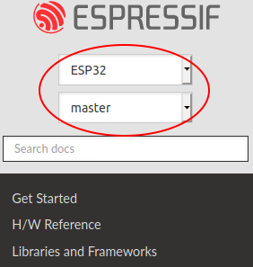

ESP-IDF Versions
The ESP-IDF GitHub repository is updated regularly, especially the master branch where new development takes place.
For production use, there are also stable releases available.
Releases
The documentation for the current stable release version can always be found at this URL:
https://docs.espressif.com/projects/esp-idf/en/stable/
Documentation for the latest version (master branch) can always be found at this URL:
https://docs.espressif.com/projects/esp-idf/en/latest/
The full history of releases can be found on the GitHub repository Releases page. There you can find release notes, links to each version of the documentation, and instructions for obtaining each version.
Another place to find documentation for all current releases is the documentation page, where you can go to the upper-left corner and click the version dropdown (between the target dropdown and the search bar). You can also use this dropdown to switch between versions of the documentation.
Documentation for older versions are also still available:
Which Version Should I Start With?
For production purposes, use the current stable version. Stable versions have been manually tested, and are updated with "bugfix releases" which fix bugs without changing other functionality (see Versioning Scheme for more details). Every stable release version can be found on the Releases page. Also refer to Compatibility Between ESP-IDF Releases and Revisions of Espressif SoCs to make sure the ESP-IDF version you selected is compatible with the chip revision you are going to produce with.
For prototyping, experimentation or for developing new ESP-IDF features, use the latest version (master branch in Git). The latest version in the master branch has all the latest features and has passed automated testing, but has not been completely manually tested ("bleeding edge").
If a required feature is not yet available in a stable release, but you do not want to use the master branch, it is possible to check out a pre-release version or a release branch. It is recommended to start from a stable version and then follow the instructions for Updating to a Pre-Release Version or Updating to a Release Branch.
If you plan to use another project which is based on ESP-IDF, please check the documentation of that project to determine the version(s) of ESP-IDF it is compatible with.
See Updating ESP-IDF if you already have a local copy of ESP-IDF and wish to update it.
Versioning Scheme
ESP-IDF uses Semantic Versioning. This means that:
Major Releases, like
v3.0, add new functionality and may change functionality. This includes removing deprecated functionality.If updating to a new major release (for example, from
v2.1tov3.0), some of your project's code may need updating and functionality may need to be re-tested. The release notes on the Releases page include lists of Breaking Changes to refer to.Minor Releases like
v3.1add new functionality and fix bugs but will not change or remove documented functionality, or make incompatible changes to public APIs.If updating to a new minor release (for example, from
v3.0tov3.1), your project's code does not require updating, but you should re-test your project. Pay particular attention to the items mentioned in the release notes on the Releases page.Bugfix Releases like
v3.0.1only fix bugs and do not add new functionality.If updating to a new bugfix release (for example, from
v3.0tov3.0.1), you do not need to change any code in your project, and you only need to re-test the functionality directly related to bugs listed in the release notes on the Releases page.
Support Periods
Each ESP-IDF major and minor release version has an associated support period. After this period, the release is End of Life and no longer supported.
The ESP-IDF Support Period Policy explains this in detail, and describes how the support periods for each release are determined.
Each release on the Releases page includes information about the support period for that particular release.
As a general guideline:
If starting a new project, use the latest stable release.
If you have a GitHub account, click the "Watch" button in the top-right of the Releases page and choose "Releases only". GitHub will notify you whenever a new release is available. Whenever a bug fix release is available for the version you are using, plan to update to it.
If possible, periodically update the project to a new major or minor ESP-IDF version (for example, once a year.) The update process should be straightforward for Minor updates, but may require some planning and checking of the release notes for Major updates.
Always plan to update to a newer release before the release you are using becomes End of Life.
Each ESP-IDF major and minor release (V4.1, V4.2, etc) is supported for 30 months after the initial stable release date.
Supported means that the ESP-IDF team will continue to apply bug fixes, security fixes, etc to the release branch on GitHub, and periodically make new bugfix releases as needed.
Support period is divided into "Service" and "Maintenance" period:
Period |
Duration |
Recommended for new projects? |
|---|---|---|
Service |
12 months |
Yes |
Maintenance |
18 months |
No |
During the Service period, bugfixes releases are more frequent. In some cases, support for new features may be added during the Service period (this is reserved for features which are needed to meet particular regulatory requirements or standards for new products, and which carry a very low risk of introducing regressions.)
During the Maintenance period, the version is still supported but only bugfixes for high severity issues or security issues will be applied.
Using an "In Service" version is recommended when starting a new project.
Users are encouraged to upgrade all projects to a newer ESP-IDF release before the support period finishes and the release becomes End of Life (EOL). It is our policy to not continue fixing bugs in End of Life releases.
Pre-release versions (betas, previews, -rc and -dev versions, etc) are not covered by any support period. Sometimes a particular feature is marked as "Preview" in a release, which means it is also not covered by the support period.
The ESP-IDF Programming Guide has information about the different versions of ESP-IDF (major, minor, bugfix, etc).

Checking the Current Version
The local ESP-IDF version can be checked by using idf.py:
idf.py --version
The ESP-IDF version is also compiled into the firmware and can be accessed (as a string) via the macro IDF_VER. The default ESP-IDF bootloader prints the version on boot (The version information is not always updated if the code in the GitHub repo is updated, it only changes if there is a clean build or if that particular source file is recompiled).
If writing code that needs to support multiple ESP-IDF versions, the version can be checked at compile time using compile-time macros.
Examples of ESP-IDF versions:
Version String |
Meaning |
|---|---|
|
Master branch pre-release.
-
v3.2-dev - in development for version 3.2.-
306 - number of commits after v3.2 development started.-
beb3611ca - commit identifier. |
|
Stable release, tagged
v3.0.2. |
|
Beta version in development (on a release branch).
-
v3.1-beta1 - pre-release tag.-
75 - number of commits after the pre-release beta tag was assigned.-
346d6b0ea - commit identifier. |
|
Stable release, tagged
v3.0.1.-
dirty means that there are modifications in the local ESP-IDF directory. |
Git Workflow
The development (Git) workflow of the Espressif ESP-IDF team is as follows:
New work is always added on the master branch (latest version) first. The ESP-IDF version on
masteris always tagged with-dev(for "in development"), for examplev3.1-dev.Changes are first added to an internal Git repository for code review and testing but are pushed to GitHub after automated testing passes.
When a new version (developed on
master) becomes feature complete and "beta" quality, a new branch is made for the release, for examplerelease/v3.1. A pre-release tag is also created, for examplev3.1-beta1. You can see a full list of branches and a list of tags on GitHub. Beta pre-releases have release notes which may include a significant number of Known Issues.As testing of the beta version progresses, bug fixes will be added to both the
masterbranch and the release branch. New features for the next release may start being added tomasterat the same time.Once testing is nearly complete a new release candidate is tagged on the release branch, for example
v3.1-rc1. This is still a pre-release version.If no more significant bugs are found or reported, then the final Major or Minor Version is tagged, for example
v3.1. This version appears on the Releases page.As bugs are reported in released versions, the fixes will continue to be committed to the same release branch.
Regular bugfix releases are made from the same release branch. After manual testing is complete, a bugfix release is tagged (i.e.,
v3.1.1) and appears on the Releases page.
Updating ESP-IDF
Updating ESP-IDF depends on which version(s) you wish to follow:
Updating to Stable Release is recommended for production use.
Updating to Master Branch is recommended for the latest features, development use, and testing.
Updating to a Release Branch is a compromise between the first two.
Note
These guides assume that you already have a local copy of ESP-IDF cloned. To get one, check Step 2 in the Getting Started guide for any ESP-IDF version.
Updating to Stable Release
To update to a new ESP-IDF release (recommended for production use), this is the process to follow:
Check the Releases page regularly for new releases.
When a bugfix release for the version you are using is released (for example, if using
v3.0.1andv3.0.2is released), check out the new bugfix version into the existing ESP-IDF directory.In Linux or macOS system, please run the following commands to update the local branch to vX.Y.Z:
cd $IDF_PATH
git fetch
git checkout vX.Y.Z
git submodule update --init --recursive
In the Windows system, please replace
cd $IDF_PATHwithcd %IDF_PATH%.When major or minor updates are released, check the Release Notes on the releases page and decide if you want to update or to stay with your current release. Updating is via the same Git commands shown above.
Note
If you installed the stable release via zip file instead of using git, it might not be possible to update versions using the commands. In this case, update by downloading a new zip file and replacing the entire IDF_PATH directory with its contents.
Updating to a Pre-Release Version
It is also possible to git checkout a tag corresponding to a pre-release version or release candidate, the process is the same as Updating to Stable Release.
Pre-release tags are not always found on the Releases page. Consult the list of tags on GitHub for a full list. Caveats for using a pre-release are similar to Updating to a Release Branch.
Updating to Master Branch
Note
Using Master branch means living "on the bleeding edge" with the latest ESP-IDF code.
To use the latest version on the ESP-IDF master branch, this is the process to follow:
In Linux or macOS system, please run the following commands to check out to the master branch locally:
cd $IDF_PATH
git checkout master
git pull
git submodule update --init --recursive
In the Windows system, please replace
cd $IDF_PATHwithcd %IDF_PATH%.Periodically, re-run
git pullto pull the latest version of master. Note that you may need to change your project or report bugs after updating your master branch.To switch from master to a release branch or stable version, run
git checkoutas shown in the other sections.
Important
It is strongly recommended to regularly run git pull and then git submodule update --init --recursive so a local copy of master does not get too old. Arbitrary old master branch revisions are effectively unsupportable "snapshots" that may have undocumented bugs. For a semi-stable version, try Updating to a Release Branch instead.
Updating to a Release Branch
In terms of stability, using a release branch is part-way between using the master branch and only using stable releases. A release branch is always beta quality or better, and receives bug fixes before they appear in each stable release.
You can find a list of branches on GitHub.
For example, in Linux or macOS system, you can execute the following commands to follow the branch for ESP-IDF v3.1, including any bugfixes for future releases like v3.1.1, etc:
cd $IDF_PATH
git fetch
git checkout release/v3.1
git pull
git submodule update --init --recursive
In the Windows system, please replace cd $IDF_PATH with cd %IDF_PATH%.
Each time you git pull this branch, ESP-IDF will be updated with fixes for this release.
Note
There is no dedicated documentation for release branches. It is recommended to use the documentation for the closest version to the branch which is currently checked out.